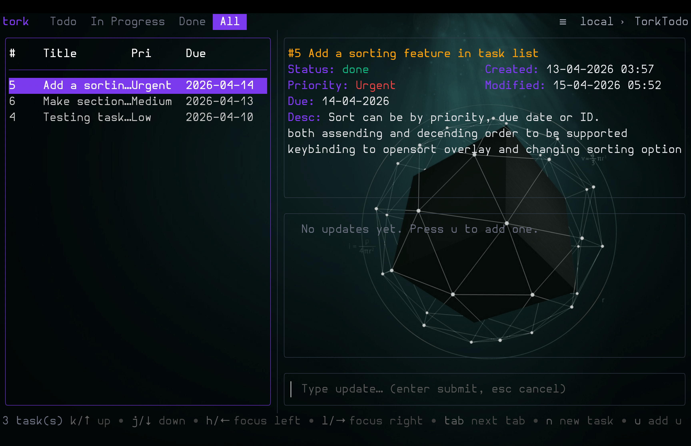
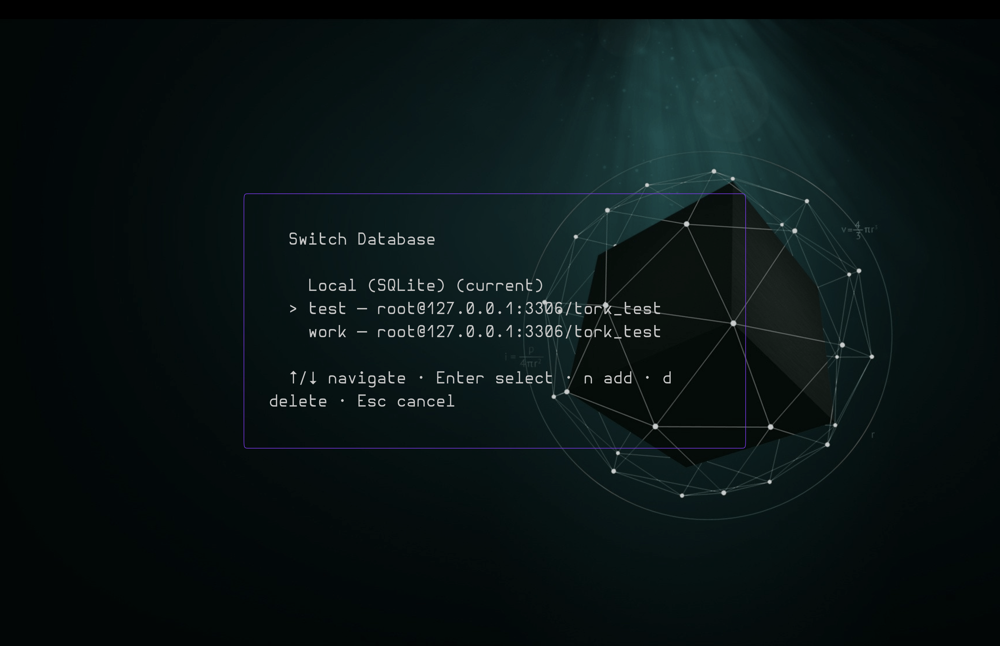
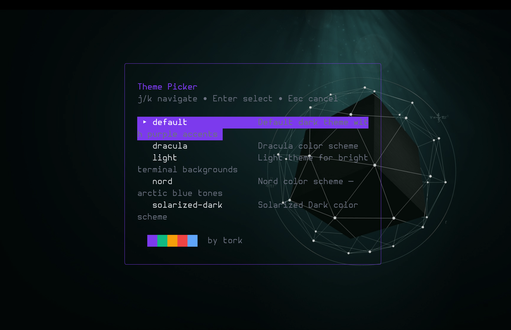
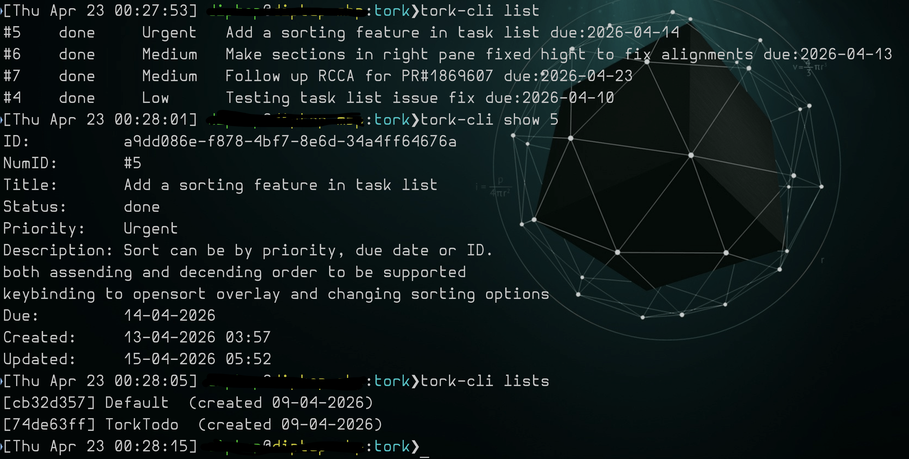

tork
A fast, terminal-first task manager built in Go. TUI + CLI + SQLite + optional MySQL backend.
A fast, terminal-first task manager built in Go. TUI + CLI + SQLite + optional MySQL backend.
See tork in action.




Everything you need to manage tasks without leaving the terminal.
Bubble Tea powered interactive interface with task list, detail view, scrollable updates, and inline editing.
Scriptable Cobra commands for add, edit, search, list, status changes, and task updates.
SQLite FTS5 powered search across titles, descriptions, tags, and updates.
5 built-in themes (default, light, dracula, solarized-dark, nord) plus custom JSON theme files.
Create, rename, delete, and switch between multiple task lists. Organize work your way.
Optional multi-user mode with shared and private task lists on a MySQL backend. Add/remove remotes from the TUI.
Custom keybindings, date formats, statuses, priorities, display columns, and tab order via JSON config.
JSON structured logs for debugging. Configurable log level and output path.
Up and running in seconds.
$ tork-cli add "Ship README" --priority high --due 15-04-2026 # Task #1 created $ tork-cli list # ID Title Status Priority Due # 1 Ship README todo high 15-04-2026 $ tork-cli done 1 # Task #1 marked as done
$ tork # Launches the interactive TUI
A full-featured terminal interface built with Bubble Tea.
Left pane shows your task list in a sortable table with status tabs across the top. Right pane displays the selected task's full detail — title, status, priority, due date, tags, description — plus a scrollable timeline of updates.
Press n to create a new task or e to edit the selected one. A modal overlay appears right in the terminal — tab through fields, type your changes, and press Enter to save. No context switching required.
Press u to add a timestamped update to any task. Updates appear in a scrollable pane below the task detail, creating an immutable activity log for each task.
Tab through status categories (All, Todo, In Progress, Done, Cancelled) to filter the list. Press o to open the sort overlay and order by title, priority, due date, or creation time.
Press L to open the list picker. Create, rename, and delete lists. Switch between them instantly — each list maintains its own tasks and state.
Press R to open the remote picker. Add new MySQL remotes, connect to shared databases, or remove backends — all without leaving the TUI. Config is auto-created on first run.
Press T to open the theme picker with live preview. Choose from 5 built-in themes or point to a custom JSON file. Keybindings, date format, columns, and tab order are all configurable.
Vim-inspired navigation with intuitive task actions.
| Key | Action |
|---|---|
| j / k | Move down / up |
| h / l | Focus left / right pane |
| Tab | Next status tab / cycle sections |
| / | Search tasks |
| Esc | Cancel / close |
| q | Quit |
| Key | Action |
|---|---|
| n | New task |
| e | Edit task |
| s | Cycle status |
| x | Mark done |
| d | Delete task |
| u | Add update comment |
Pre-built binaries for every major platform.
Or install with Go: go install github.com/diptopandit/tork/cmd/tork@latest